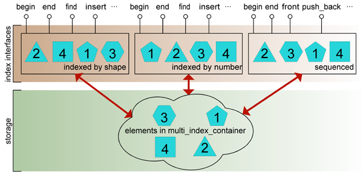

Boost.MultiIndex TutorialBoost.MultiIndex Tutorial
Boost.MultiIndex TutorialBoost.MultiIndex Tutorial
STL containers are designed around the concept that each container controls its
own collection of elements, giving access to them in a manner specified by the
container's type: so, an std::set maintains the elements ordered
by a specified sorting criterion, std::list allows for free
positioning of elements along a linear sequence, and so on.
Sometimes, the necessity arises of having different access interfaces
to the same underlying collection: for instance, some data might need to be
sorted according to more than one comparison predicate, or a bidirectional list
might benefit from a supplemental logarithmic lookup interface. In these
situations, programmers typically resort to manual compositions of different
containers, a solution that generally involves a fair amount of code
devoted to preserve the synchronization of the different parts of
the composition. Boost.MultiIndex allows for the specification of
multi_index_containers comprised of one or more indices with
different interfaces to the same collection of elements. The resulting constructs
are conceptually cleaner than manual compositions, and often perform much better.
An important design decision has been taken that the indices of a given
multi_index_container instantiation be specified at compile time: this
gives ample room for static type checking and code optimization.
Boost.MultiIndex takes inspiration from basic concepts of indexing arising in the
theory of relational databases, though it is not intended to provide a full-fledged
relational database framework. multi_index_container integrates seamlessly
into the STL container/algorithm design, and features some extra capabilities regarding
lookup operations and element updating which are useful extensions even for
single-indexed containers.

Fig. 1: Diagram of a multi_index_container with three indices.
The figure above depicts a multi_index_container composed of three indices:
the first two present a set-like interface to the elements sorted by
shape and id, respectively, while the latter index provides the functionality
of a bidirectional list in the spirit of std::list. These
indices act as "views" to the internal collection of elements, but they do not only
provide read access to the set: insertion/deletion methods are also implemented much
as those of std::sets or std::lists. Insertion of an
element through one given index will only succeed if the uniqueness constraints of all
indices are met.
All the public types of Boost.MultiIndex reside in namespace ::boost::multi_index.
Additionaly, the main class template multi_index_container and global functions
get and project are lifted to namespace ::boost
by means of using declarations. For brevity of exposition, the fragments
of code in the documentation are written as if the following declarations were in effect:
using namespace ::boost; using namespace ::boost::multi_index;
Revised February 21st 2006
© Copyright 2003-2006 Joaquín M López Muñoz. Distributed under the Boost Software License, Version 1.0. (See accompanying file LICENSE_1_0.txt or copy at http://www.boost.org/LICENSE_1_0.txt)